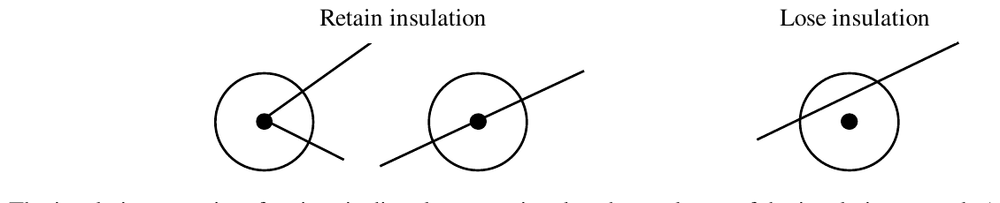
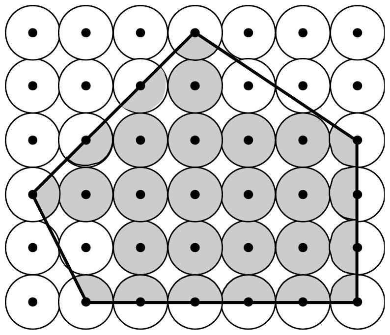

The 22nd Annual ACM International Collegiate Programming Contest World Finals · Problem A
A new high technology company has developed a material that it hopes to market as an insulator. The material consists of crystals and the square lattice on which the crystals are grown. The points on the lattice are at 1 centimeter intervals. The crystals are formed from seeds that are planted at the lattice points. Each crystal grows into a circle of diameter 1 centimeter.
Using this material in applications will require cutting the lattice into pieces. One of the problems in cutting the lattice is that some crystals will be sliced in the process. Slicing a crystal other than through the center completely destroys that crystal’s insulation properties. (A cut touching a crystal tangentially does not destroy that crystal’s insulation property.)

The insulation capacity of a piece is directly proportional to the total area of the insulating crystals (or parts of crystals) that are on the piece. The following figure shows a polygonal piece with its insulating crystals shaded.

Your job is to determine the insulating capacity of such polygonal pieces by computing the total area of the insulating crystals in it.
The input consists of a sequence of polygon descriptions. Each description consists of a positive integer n (3 ≤ n ≤ 25) representing the number of vertices, followed by n pairs of integers. Each pair is the x and y coordinates of one vertex of the polygon. (The coordinate system is aligned with the lattice such that the integer coordinates are precisely the lattice points.)
Vertices of each polygon are given in clockwise order. No polygon will be degenerate. No coordinate will be larger than 250 in absolute value.
The input is terminated by zero for the value of n.
For each polygon, first print its number (“Shape 1”, “Shape 2”, etc.) and then the area of the insulating crystals in cm², exact to three digits to the right of the decimal point.
The following sample corresponds to the previous illustration.
5 0 2 3 5 6 3 6 0 1 0 0
Shape 1 Insulating area = 15.315 cm^2